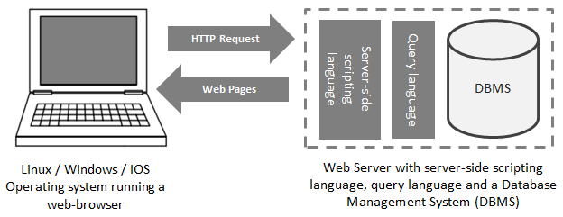

The first half of this course focussed heavily on client-side technologies such as HTML, CSS, Javascript and existing Javascript libraries. These technologies are named as such because they are performed by the client in the client-server model. A client is a piece of software(usually a web browser) which operates on the local system and makes Hypertext Transfer Protocol (HTTP) requests to a server as necessary. Client-side technologies can be faster and safer than server-side technologies; however they are limited in functionality and cannot interact with permanent storage such as a database. If your web-application requires permanent storage, for example you want users to add to an existing dataset or pull information that is stored centrally, server-side technologies are required to complete these processes.
The term ‘server-side technologies’ can encompass a range of software solutions, mainly:; server-side scripting languages; Database Management Systems (DBMS); web server software such as Apache; and many other technologies depending upon the application being built. The essential combination of technologies required to build a service is known as a ‘software-solution stack’ and the original and most commonly used web-service software solution stack is known as LAMP (Linux, Apache, MySQL and PHP). The 4 components of this stack are now so interchangeable that hundreds of other acronyms are used to define different web-service solution stacks (WAMP uses Windows for example, MAMP uses Mac OS X). It is worth noting that the stack must include 4 components: a client; a web-server instance; a DBMS and a server-side scripting language.
For the purposes of this part of the course, the software solution stack we will be using is Windows, Apache, PostgreSQL and PHP. We will be using these technologies to extract tweet data from a database and create a web map to display the geo-located tweets. We will cover each of the stack solution components in greater detail, but for now, it is important that you understand the client-server relationship and how these different technologies are involved. To explain how the software solution stack works in greater detail, let’s imagine how the Facebook log-in process works:
Now we have looked at how these technologies interact with one another let’s look at some of the components in greater detail, we can then consider how our web-map service will be constructed.